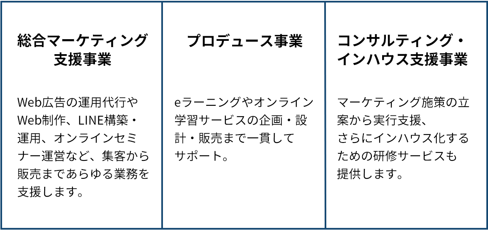

今やっている広告運用の仕事にこんな不安や不満を感じていませんか？
少しでもこんな悩みを抱えているなら
弊社の広告マーケターとして
市場価値を高めませんか？
※移動した先のスケジュール表からお好きな面接日時をご選択ください。
そもそも、広告マーケターって何？
どんな仕事をするの？
具体的にお伝えすると、LPやクリエイティブの制作指示や改善指示、CPA・ROASの管理など、広告運用だけではなく成果を追求していただきます。
事業成長にコミットして広告運用に取り組めるので。
自分が考えた仮説がぴったりとハマり、成果の改善に繋がった時は大きな達成感を感じるでしょう。
お任せする業務は幅広いですが、わからないことや迷うことがあれば社長にいつでも質問できる環境があります。
今あなたが持っている広告運用の基礎知識を活かして、ブレイクスルーを起こしてください！
ネクストって何をやっている会社？
「総合マーケティング支援事業」「プロデュース事業」「コンサルティング・インハウス支援事業」の3つの事業を柱に、個人や中小企業のマーケティングパートナーとしてサービス提供しています。

世の中には高品質なサービスを提供できるにも関わらず、マーケティングの知識がなく誰にも知られず埋もれてしまっている個人や中小企業が数多く存在します。
そのため、私たちが社外マーケティング責任者のような立ち位置でサポートし、悩みを抱える人に商品を届けることを目指します。
ネクストで働く5つのメリット
平均27歳！若手でもチャンスが
多い環境

20代から30代前半の若手メンバーが多い当社。
年功序列ではなく実力主義の会社のため、若手であっても活躍できる環境があります。
評価制度も明確に定めており、モチベーションを切らすことなく、目の前の仕事に集中できるのでメンバーから好評です。
事業責任者になれるチャンスが
ゴロゴロ転がっている
社長自ら広告運用をしているため、広告運用を担当する部署がありません。
そのため、あなたの頑張り次第で事業責任者になることも可能。
また、会社規模を拡大中のため、他の新設ポジションの責任者になることもできます。
創業15年という盤石な基盤を築いている会社で、着実にキャリアアップできる環境があります。
広告マーケターとして替えがきかない
市場価値の高い人材へ
管理画面の数値チェックやCPAが合っているかどうかの確認だけをするような広告運用者（オペレーター）ではありません。
事業の売上や利益の管理、ROASの確認・調整、LPの分析・修正・改善など、広告運用だけではなく事業全体を俯瞰して見られる広告マーケターになれます。
広告代理店では経験できない事業会社ならではの経験です。
残業時間は月間数時間、有給休暇も100%取得可能
ワークライフバランスが整っており、残業時間は月間数時間、有給休暇取得率はなんと100％！
仕事に没頭するのも良いですが、しっかりと遊んで欲しいという社長の想いから、この社風が出来上がりました。
さらに、居心地の良さを裏付けるように離職率も5％以下と低い水準。
腰を据えてじっくりと働きたいという方にはピッタリの会社です。
バリバリ働く？
それともゆっくりマイペース？
働き方はあなた次第
働き方はあなたの希望に最大限寄り添います。
キャリアアップをしていきたいなら、たくさんのお仕事を裁量権も持ちながら推進していただきます。
反対に、自分のペースで少しずつスキルや知識を身に付けたい方は、少しずつお仕事をお任せします。
社長や上司が強要することは一切ないので、あなたの希望を正直に教えてください。
ネクストで働く1日の流れ
メンバー全員の共通する価値基準
メンバーそれぞれが主体性を発揮し、成果の最大化に向けて自らの意思で行動します。
ここで勘違いしてほしくないのは、個人の力だけで仕事をしているわけではないということ。
そう、必ずメンバーの助けや支えがあります。
この助けや支えに対して素直に「ありがとう」と言えることが、当社が大切にしている価値観です。
メンバーを気遣うことができ、素直に相手の話を聞くことができる、そんな方にぜひ入社して欲しいと思っています。
※移動した先のスケジュール表からお好きな面接日時をご選択ください。
働いてるメンバーにインタビュー！

Yumeka Yamauchi
2016年入社 / マーケテイング事業部マーケター
幅広い仕事に携われるからこそ多種多様なスキルが身に付くだけでなく、実力で評価してもらえる会社です。経歴や勤続年数に関わらず能力でみてもらえて頑張るほど評価されるので、どんな人にもキャリアアップのチャンスがあると思います。「これを達成したらこれだけ昇格・昇給する」といったように評価基準も明確で、頑張りやすい仕組みも整っています！
Shoichiro Hada
2022年入社 / マーケテイング事業部インサイドセールス課
社会経験が浅く何のスキルもなかった僕ですが、入社後すぐに現場(お客様の前)へ出してもらい、短期間で明らかに仕事力がアップしました。キャリアアップまでの道筋も明確にしてくれたので、次の目標に向けて自分で考えながら仕事に取り組めるようになり、着々とステップアップできています。
Miki Nakamura
2020年入社 / マーケテイング事業部プロジェクトマネジメントオフィス課
オンとオフの切り替えがしっかりしているもののアットホームなので、伸び伸びと働けます。20〜30代の社員が多くてみんな本当に仲が良く、仕事終わりの定期的な飲み会はもちろん、休日も一緒に過ごすほどです！残業がなく有給も自由に取得できるので、プライベートも充実させやすいです。オフィスが綺麗で広々としているのも、モチベーションがあがるポイントです！
Takayuki Nagayama
2022年入社 / マーケテイング事業部インサイドセールス課
今までは「マニュアル通りにタスクを消化するだけ」の働き方をしていました が、全員が会社の全ての業務に携わるネクストに入社してからは、常に全体を見ながら自分の頭で考えて行動する術が身に付きました。時間に対する意識も変わり、短時間で密度の濃い仕事ができるようになっています。まだ入社後間もないですが、社会人としての価値が大きく向上したと実感できています。
ネクストで働くこんな方にはオススメ&こんな方にはオススメしない
代表メッセージ

初めまして。株式会社ネクストの齋藤と申します。
弊社は価値ある商品やサービスを世の中に提供していくマーケティング会社です。
主にeラーニングやオンライン学習サービスの企画・設計・販売までを一貫してサポートをしています。
今回は求人募集ということで、これから応募や入社される方にメッセージを送らせていただきます。
弊社のミッションは『結果にフルコミットする』です。
あなたがクライアント様の問題を解決することに全力を注ぎ、成果を上げればもの凄いスピードでキャリアアップしていきます。
一方でプライベートも大事にして欲しいという考えのもと『残業時間は月間数時間程度』です。
キャリアもプライベートも効率良くする為には、自主性のある働き方とPDCAを繰り返す思考が必要不可欠です。
最後になりますが、20代～30代のスタッフが活躍するネクストと一緒にあなたも共に成長していきましょう。
※移動した先のスケジュール表からお好きな面接日時をご選択ください。
エントリーから内定までの流れ
募集要項
当社の事業を成長させる広告マーケターのお仕事です。
日々の数値確認からLPの改善、広告クリエイティブの改善、デザイナーやコーダーへの指示出しなど広告運用に付随する業務を幅広くご担当いただきます。
広告運用担当者ではなく、広告業務を中心としたマーケターです。
これから事業規模をさらに拡大していくためには、広告マーケターが必要不可欠。
今はスキルがなくても問題ありませんので、入社してから運用スキルを磨いて当社の事業を牽引してくれる方を募集します。
| 募集職種 | 広告運用者 |
|---|---|
| 業務内容 | 広告運用管理、運用改善、広告クリエイティブの改善等 |
| 給与 | 月給270,000円〜350,000円 |
| 昇給 | 年1回 |
| 賞与 | 年2回 |
| 雇用形態 | 正社員 |
| インセンティブ賞与 | あり |
| 試用期間 | 3ヶ月 ※試用期間中の労働条件：月給250,000円 |
| 勤務地 | 〒556-0022 大阪府大阪市浪速区幸町3−7−11 アルティア大阪ビル5F |
| 待遇 | ・役職手当 ・社会保険完備 ・交通費全額支給 ・残業手当 ・定期健康診断 ・社員旅行 ・会員制ホテルの保養所 |
| 勤務時間 | 9時〜18時 上記時間の中でシフト制 ※繁忙期は残業あり （残業手当は1分単位で支給） |
※移動した先のスケジュール表からお好きな面接日時をご選択ください。
よくある質問
はい、大丈夫です。基本的な知識があり、専門用語での会話ができれば全く問題ありません。運用・改善ノウハウについては、社長がOJTでしっかりとお伝えします。
はい実力で評価されます。学歴優遇や年功序列という考え方はなく、スキルや成果に応じて評価される社内制度です。
原則出社をお願いしております。理由は、顔を合わせて仕事をすることでチームワークが向上し、プロジェクト成功の大きな要因になると考えているためです。当社の考え方ですので、どうしてもリモートで仕事がしたい方は応募をお控えください。
はい、本当です。繁忙期を除いて残業はほとんどありません。仕事と遊びを両方楽しんでほしいという当社の考えです。
はい、全くありません。有給休暇の取得を推奨しておりますので、好きな時に自由に取得できます。
Google広告（リスティング広告・YouTube広告）、SNS広告の運用経験が１年以上あるのが望ましいです。
広告の管理画面を操作できるのが、最低のスキル条件です。
※移動した先のスケジュール表からお好きな面接日時をご選択ください。